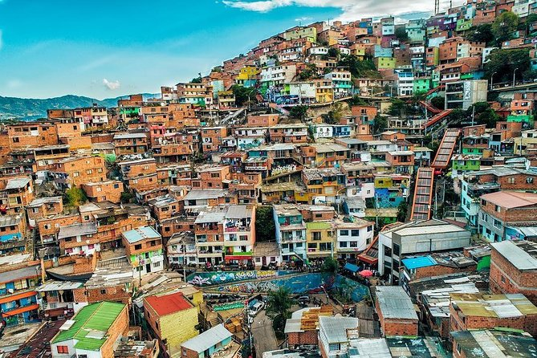
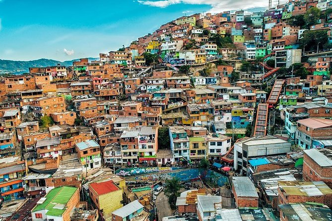

Medellin
Medellín, Colombia, is a vibrant city known for its innovative spirit and stunning transformation. Nestled in a valley surrounded by mountains, it boasts a pleasant climate year-round, earning it the nickname "City of Eternal Spring." Visitors can explore the rich culture through its museums, ively street art, and historic neighborhoods like Comuna 13. The city is also famous for its friendly locals, delicious cuisine, and the breathtaking Metrocable system that offers panoramic views. Whether you're interested in nightlife, nature, or history, Medellín promises an unforgettable experience.
 

Medellín has the Metrocable, a cable car system that connects the mountainous areas of the city to the center. This innovative mode of transportation not only facilitates access to previously isolated communities but also offers spectacular panoramic views of the city and its surroundings.
Things to do in Medellin
- Ride the Metrocable: Enjoy stunning views from the cable car.
- Explore Comuna 13: Discover vibrant street art and community stories.
- Admire Plaza Botero: See large sculptures by Fernando Botero.
- Tour Pueblito Paisa: Experience a replica of a traditional Antioquian village.
- Attend Feria de las Flores: Join the colorful flower festival in August.
- Visit the Museo de Arte Moderno: Explore contemporary Colombian art.
- Experience El Poblado nightlife: Dine and enjoy nightlife in a trendy area.
Why visit Medellin?
Medellín is a compelling destination due to its remarkable transformation into a model of urban innovation, set against the stunning backdrop of the Andes mountains. Visitors can experience vibrant local culture through festivals and art, enjoy warm hospitality from friendly locals, and savor delicious Colombian cuisine. Unique attractions like Comuna 13 and the Metrocable highlight the city's rich history and modernity. With its pleasant climate and opportunities for outdoor adventure, Medellín offers a captivating blend of culture, beauty, and excitement.